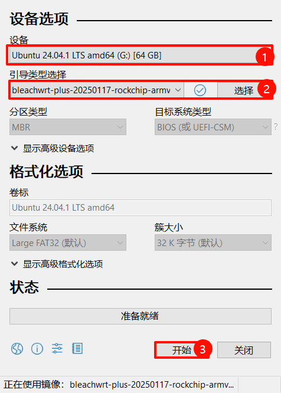
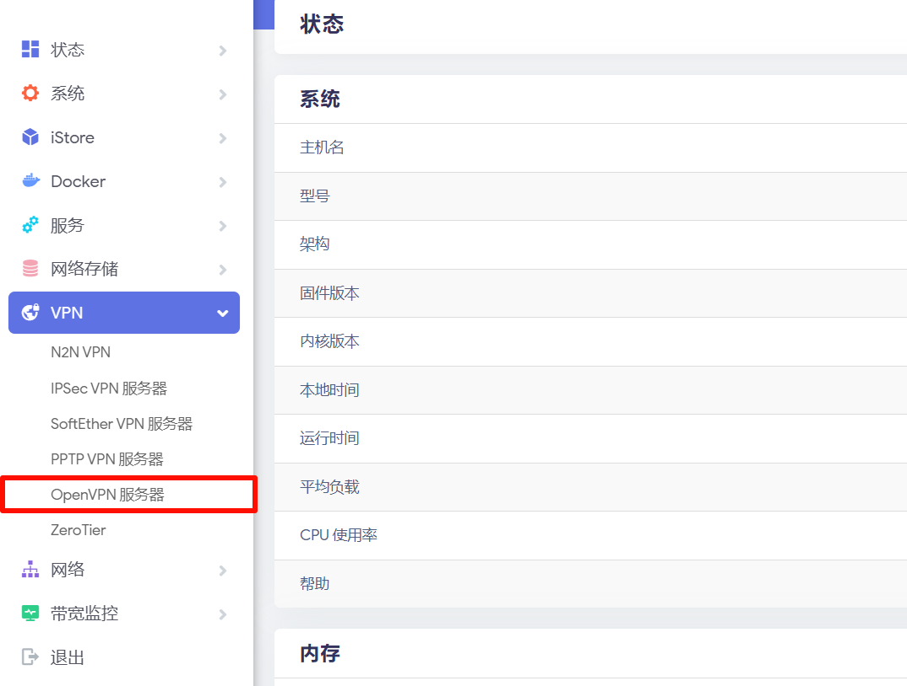
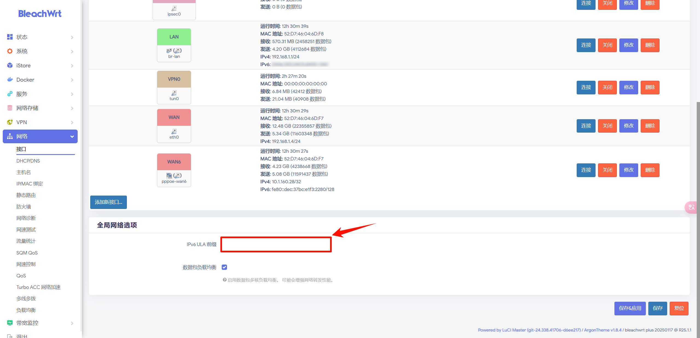
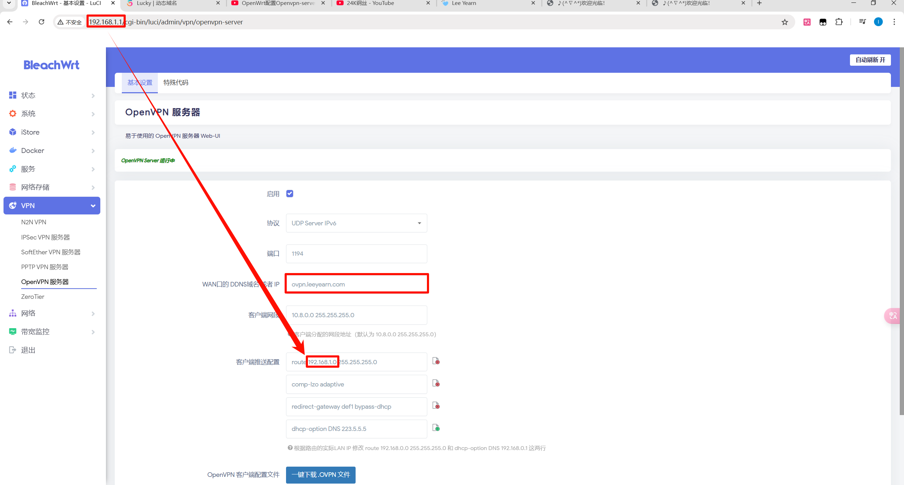
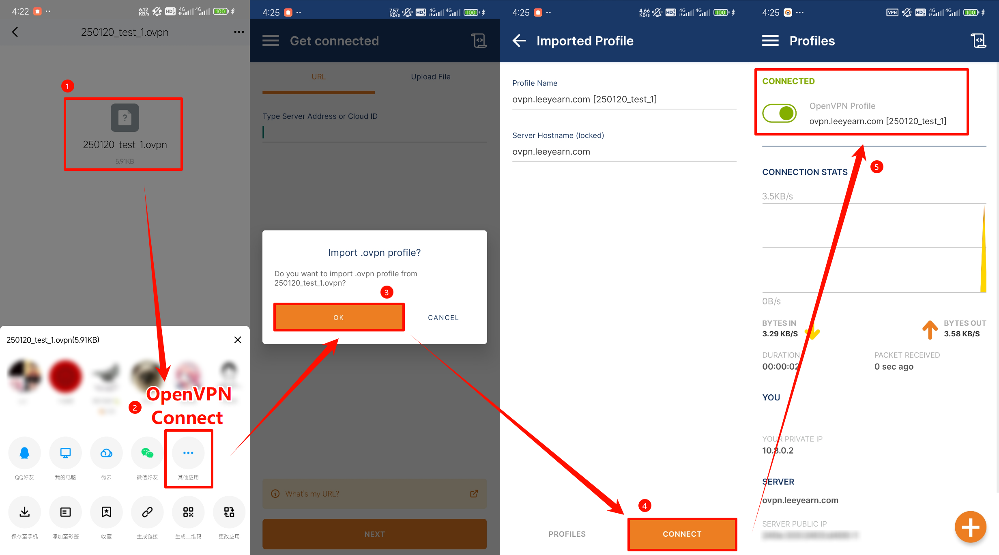

OpenVPN Server
使用 OpenWrt 配置 IPv6 + DDNS + OpenVPN 实现远程访问及异地组网
首先说明本次用到的装备：
| 设备名称 | 详情 |
|---|---|
| 公网的IPv6或IPv4地址 | 至少一个，可以是固定的也可以是弹性公网，如果没有的就做内网穿透 |
| 域名 | 可以在阿里云、腾讯云、华为云等厂家购买域名，我用的是阿里云的 |
| 软路由设备 | 我用的是 R4S，买成￥571，记得选带 TF 卡和 TF 读写器，或者自己单独买也行。 也可以用其他的 RS 设备、x86_64 机子或小米、树莓派、Raspberry Pi等路由设备 |
| Open Wrt | 我用的是 BleachWrt ，版本是 bleachwrt plus 20250117，同版本固件下载地址，找自己对应版本的固件下载，并且要注意不熟悉Wrt的人尽量不要用 .mini-daily ，这个是精简版，推荐使用高大全版本下载 plus-daily |
| rufus | 刷固件的软件，也可以用其他的软件，我用的是rufus-v4.6，下载地址 |
一、路由结构
光猫接 R4S 的 WAN 口，R4S 的 LAN 口出去接路由器/交换机的 LAN 口

光猫改桥接模式
我本来想自己找光猫的超级管理员账户和密码，结果找了半天没找到，就给宽带师傅打电话，让他远程给我改的。 其实直接找宽带师傅更快，几分钟就搞好了，都不用自己在网上慢慢找慢慢测试
二、将固件刷到软路由中
R4S 是用 TF（microSD） 卡的，所以只需要将固件刷进 TF 卡就行了，设备那里是U盘，引导类型那里是 镜像文件(请选择)，就选择下好的 Wrt 固件，然后点击开始，等待 准备就绪 那一条变成绿色就可以将 TF 直接插到 R4S 的 TF 卡槽中了。

三、进如 BleachWrt 系统
给 R4S 接上电后，等待 system 的绿灯亮起来后就可以进入了
打开浏览器，在地址栏输入 192.168.1.1，打开这个页面，默认用户名：root，密码：password
 这就是进入系统的界面，如果你发现你没有网络存储、VPN 这些内容的话，你下的就是mini的精简版，请重新找一下 plus 的高大全版
这就是进入系统的界面，如果你发现你没有网络存储、VPN 这些内容的话，你下的就是mini的精简版，请重新找一下 plus 的高大全版

四、插件检查
首先看一下在 VPN 下面有没有 OpenVPN，没有的话是不可能的。

其次在iStore中搜索并下载Lucky插件，下载的时候会有终端弹窗，当弹窗边缘是绿色的时候就可以关闭终端弹窗了

五、设置软路由 PPPoE 拨号
首先在 网络-接口 中将全局网络选项中的 IPv6 前缀删掉

然后找到顶部的 WAN 口，如果是 IPv6 的话就设置 WAN6 ，将传输协议设置为 PPPoE，用户名和密码就是宽带账号和密码，如果不知道就在改光猫桥接的时候问一下，设置完成后点击保存&应用

六、打开 Lucky 插件
在服务 - Lucky中找到插件基本设置，然后启动服务，进入 Lucky 后台管理页面，初始用户名和密码都是666
 进入之后设置一下两个东西，第一个是安全入口，第二个是用户名和密码，否则不能设置 DDNS 动态域名
进入之后设置一下两个东西，第一个是安全入口，第二个是用户名和密码，否则不能设置 DDNS 动态域名

七、设置 DDNS 动态域名
1 添加 DDNS 任务
点击动态域名，添加任务，以下内容没写的都是默认，不用改
| 项目 | 设置详情 |
|---|---|
| 操作模式 | 简易模式 |
| DNS 服务商设置 | 这个得根据你域名的 DNS 托管商，如果你域名的 DNS 是阿里的，这里就选阿里，我这里用的阿里 |
| AccessKey ID和Secret | 点击上面的创建 AccessKey 一步一步来就行了 |
| 类型 | 根据你的公网 IP 进行更改，我没有公网 IPv4 ，就选的 IPv6 |
| 获取公网 IP 方式 | 通过网卡获取 |
| 网卡列表 | br-lan |
| IP选择匹配规则 | 测试一下，如果测试结果是 240e、2409、2408开头的都是公网 IP（分别代表电信、移动、联通） 如果实在不知道就把测试得到的 IP 拿去 ITDOG ping 一下，如果全绿就是公网 IP，否则就不是 |
| 域名列表 | 就是你买的那个域名，可以设置成三级域名，比如我的就是 ovpn.leeyearn.com |
然后就添加任务(我这里已经添加过了，就是修改任务了)

2 看同步情况
如果同步情况是公网 IP 未改变 托管商记录一致 都表示通过了

八、设置OpenVPN
在 Wrt 中VPN - OpenVPN
| 设置名 | 设置详情 |
|---|---|
| 启用 | 勾选 |
| 协议 | 看你选的是 v4 还是 v6 ，但是 UDP 和 TCP 中 建议选 UDP |
| 端口 | 默认 |
| WAN 口...IP | 就填刚刚 DDNS 的那个域名，比如 ovpn.leeyearn.com |
| 客户端网段 | 默认 |
| 客户端推送配置1 | 根据你的 Wrt 的 IP 环境来定，这里是写 Wrt 所在的整个网段，后面的子网掩码不变 比如 Wrt 的地址是 192.168.1.1，那这里就填 192.168.1.0，但是如果是 192.168.3.1，那这里就填 192.168.3.0 |
| 客户端推送配置2 | 默认 |
| 客户端推送配置3 | 默认 |
| 客户端推送配置4 | 建议把 DNS 后面的 IP 改成域名商的 DNS IP，比如阿里的就是 223.5.5.5 |
完了之后保存并应用 
九、添加 OpenVPN-Server 的参数
为了保障同一时间可以有多台设备连接到服务器，就要在 Server 端添加参数让所有的客户端用同一个证书进行验证，参数 option duplicate_cn "1"
可以使用 ssh 远程连接或者在Wrt中使用 YYTD 终端，用户名为root，密码为password，我这里使用 Termius 软件 ssh 远程连接，效果是一样的
 首先使用
首先使用 vi /etc/config/openvpn
 进入 OpenVPN 服务端的参数配置文件，先按
进入 OpenVPN 服务端的参数配置文件，先按 i 进入编辑模式，然后在最后面粘贴参数 option duplicate_cn "1" ，然后按键盘左上角的 ESC 退出编辑模式，再按 :wq 进入命令模式实现保存并退出。
 退出后使用
退出后使用 /etc/init.d/openvpn restart 命令重启 OpenVPN 服务即可
十、手机测试
在手机上下载 OpenVPN Connect 软件，我以安卓为例，一般的应用商店是没有的，但是尽量科学上网去谷歌商店下载，别去网上下些奇奇怪怪的版本，然后在 VPN - OpenVPN 中下载客户端的 OpenVPN 文件
 然后传输到 QQ 或微信中下载下来，并使用
然后传输到 QQ 或微信中下载下来，并使用 OpenVPN Connect 打开

然后关闭手机 WiFi，使用流量在浏览器打开 192.168.1.1 就能打开 Wrt 的网页了

十一、防火墙地址伪装
但是现在只能访问 OpenWrt，无法访问内网的其他设备，可以做做简单的验证就是用 Microsoft 远程登陆 (RD 客户端)软件测试，一定是连不上内网的 PC 电脑的，这时候就需要做防火墙的 NAT 进行设置
将经过防火墙的流量，尤其是来自内网的流量进行地址转换，使其能够正确地通过外网进行通信，配置参数为：iptables -t nat -A POSTROUTING -o br-lan -j MASQUERADE，它的含义就是对于从 br-lan 接口发出的所有数据包，将它们的源 IP 地址修改为 br-lan 接口的 IP 地址，使内网主机能够通过 NAT 访问外部网络。
操作
在 网络 - 防火墙 - 自定义规则 的末尾添加参数 iptables -t nat -A POSTROUTING -o br-lan -j MASQUERADE，然后重启防火墙即可。

十二、远程访问内网设备测试
这里通过手机使用流量在 RD 客户端 软件远程连接内网 PC 进行测试。首先打开电脑的远程连接功能
 然后在
然后在 RD 客户端 中点击 + 号添加设备，输入电脑的 IP，然后输入电脑用户名和密码，最近进行连接，就能够实现实现远程访问了